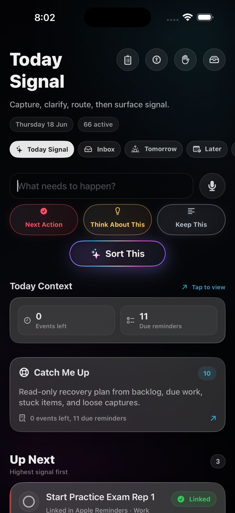
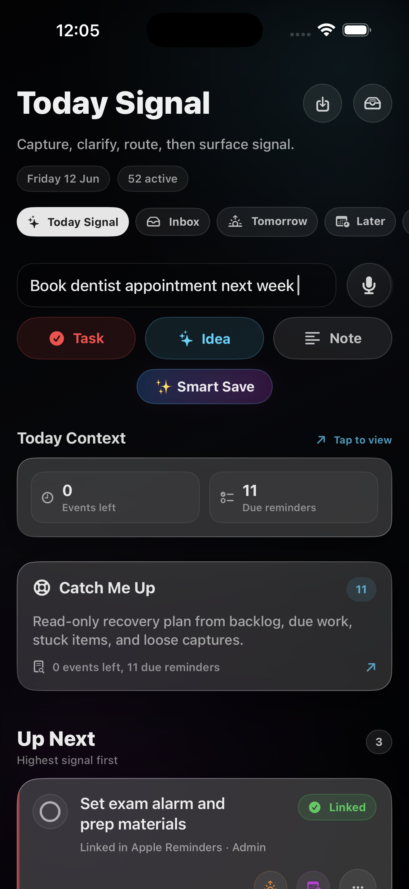
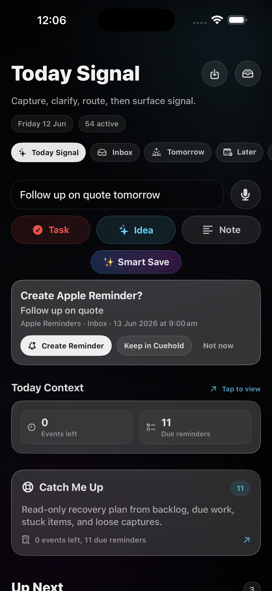

Notes become graveyards.
Fast capture is easy. Finding the thing again when it matters is the hard part.
Capture → Triage → What Next
The thinking layer before the task. Cuehold turns scattered intent into a reviewed next action.
External TestFlight access is being prepared.

Cuehold is built for the moment before a task becomes a commitment, when the thought is real but the destination is not obvious yet.
Fast capture is easy. Finding the thing again when it matters is the hard part.
Everything feels urgent when every loose thought is promoted too early.
Time blocks lose trust when they are filled before the action is clear.
Capture first. Triage next. Commit only when the next step deserves a real place.
Cuehold sits between messy intent and Apple-native execution. It keeps capture fast, judgement explicit, and resurfacing focused on what deserves attention now.
Type, speak, paste, screenshot, or share before the thought evaporates.
Decide whether it is action, thought, reference, plan material, or nothing urgent.
Rank the next action and export only after review when Apple should take over.
Screenshots are staged as proof of the loop, not decoration: messy input, explicit triage, and the next signal that deserves attention now.


You decide in Cuehold. Apple Reminders reminds. Apple Calendar maps time.
Calendar changes stay explicit and reviewed.
Reminders are created only after confirmation.
You decide before Apple apps receive commitments.
Approved next actions can move there when ready.
Timing belongs on the calendar after review.
The messy middle stays visible without becoming noise.
We are looking for Apple users who capture too much and want a clearer next step.
Join the betaNo. Cuehold helps you decide what matters, then sends approved next actions to Apple Reminders only when you confirm.
No. Apple Calendar is the time map. Cuehold uses calendar context where needed and exports only after review.
No. Cuehold is a productivity workflow tool built for overloaded, fast-moving, capture-heavy brains. It is not diagnosis, treatment, or therapy.
Some cleanup and routing features may optionally use AI-assisted processing if you enable them. Cuehold tells you before that happens.